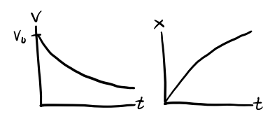

Simple Systems
Even if we can easily find the equations of motion of a system, very few are simple enough to solve exactly using analytical methods. In this lesson we’ll consider some of the most common such systems. We’ll focus on (possibly non-conservative) forces acting on a single-particle particle of mass \(m\) that take the form,
\[\mathbf{F} = \mathbf{F}(\mathbf{x}, \mathbf{v}, t).\]
We’ll assume \(\mathbf{F}\) is either linear or quadratic in position and velocity. With a few exceptions, these are the few cases we can even solve the equations of motion analytically.
For the most part, we’ll focus on the case when everything is 1-dimensional, \(F = F(x, v, t)\). While we’ll speak in this lesson of \(F\) being a force, \(x\) a position, and \(v\) a velocity, the methods we describe indeed can apply to many other situations as well.
For example, \(x\) could represent a generalized coordinate (say an angle), in which case \(v\) would be a generalized velocity (say an angular velocity) and \(F\) a generalized force (say a torque). In some cases, \(x\) need not be a coordinate at all. For example, we can use the same techniques from this lesson to analyze a simple circuit, in which case \(x\) would be a charge or a current and \(F\) would be a supplied voltage.
Independent Forces
The first and simplest case we’ll consider are forces that don’t depend on position or velocity,
\[m \mathbf{a} = \mathbf{F}_0(t).\]
We can solve these systems directly by integrating both sides, i.e. reducing to quadrature. We have,
\[\begin{align*} \mathbf{a}(t) &= \frac{1}{m}\mathbf{F}_0(t), \\ \mathbf{v}(t) &= \mathbf{v}_0 + \frac{1}{m}\int_0^t dt'\mathbf{F}_0(t'), \\ \mathbf{x}(t) &= \mathbf{x}_0 + \mathbf{v}_0t + \frac{1}{m}\int_0^t dt' \int_0^{t'} dt''\mathbf{F}_0(t''). \\ \end{align*}\]
The simplest of these cases are when there are no forces at all, and when the forces are constant. If there are no forces at all acting on the system, \(\mathbf{F}_0 = \mathbf{0}\), in which case the equations of motion reduce to
\[\begin{align*} \mathbf{a}(t) &= 0, \\ \mathbf{v}(t) &= \mathbf{v}_0, \\ \mathbf{x}(t) &= \mathbf{x}_0 + \mathbf{v}_0t. \\ \end{align*}\]
This is just a statement of Newton’s First Law. If no forces act on a particle, it continues linearly along its path at constant velocity. The next simplest case is when \(\mathbf{F}_0=const\). In this case, the equations of motion become
\[\begin{align*} \mathbf{a}(t) &= \frac{1}{m}\mathbf{F}_0, \\ \mathbf{v}(t) &= \mathbf{v}_0 + \frac{1}{m}\mathbf{F}_0 t, \\ \mathbf{x}(t) &= \mathbf{x}_0 + \mathbf{v}_0t + \frac{1}{2m^2}\mathbf{F}_0^2. \\ \end{align*}\]
This case includes the gravitional force near the surface of the Earth, in which case \(\mathbf{F}_0=m\mathbf{g}\). It also includes the problem of an electric charge placed close to a large conducting sheet with a uniform electric field, where \(\mathbf{F}_0=q\mathbf{E}_0\).
In these problems, the motion will always be along a parabolic arc. The parabola will slope toward the force if the force is attractive, and away from the force if it’s repulsive.
Example: Free-fall near Earth
Suppose an object of mass \(m\) is falling freely near the Earth’s surface. In this case, \(\mathbf{F}_0 = m\mathbf{g}\), so
\[\begin{align*} \mathbf{a}(t) &= \mathbf{g}, \\ \mathbf{v}(t) &= \mathbf{v}_0 - \mathbf{g}t, \\ \mathbf{x}(t) &= \mathbf{x}_0 + \mathbf{v}_0t + \frac{1}{2}\mathbf{g}t^2. \end{align*}\]
The motion in this case will always lie in the plane spanned by \(\mathbf{v}_0\) and \(\mathbf{g}\). This means without loss of generality we can assume motion lies in the xy-plane with \(\mathbf{g} = -g\mathbf{e}_y\). Then \(y\) can be solved as a function of \(x\) to give \[ y(x) = v_{0}\frac{x}{v_0 \cos \theta}\sin \theta - \frac{1}{2} g\bigg(\frac{x}{v_0 \cos \theta}\bigg)^2, \] which is of course a downward-sloping parabola centered at the vertex \(\big(\frac{v_0^2 \sin 2\theta}{2g}, \frac{v_0^2 \sin^2 \theta}{g}\big)\).

Drag Forces
The next type of forces we’ll consider are those which are functions of velocity,
\[ m\mathbf{a} = \mathbf{F}(\mathbf{v}). \] In the 1-dimensional case, this reduces to,
\[ ma = F(v). \] Provided \(v\) is small, we can approximate \(F(v)\) by its first few terms. I’ll write it as,
\[ F(v) \approx a - bv - cv^2. \] Typically, drag forces shouldn’t apply a force when the particle is at rest, which means \(a=0\). The remaining two terms cover two distinct regimes of drag:
- Linear or viscous drag: \(F(v) = -bv\), where \(b > 0\).
- Quadratic or air drag: \(F(v) = -cv^2\), where \(c > 0\).
Linear Drag
It’s convenient to analyze these two distinct cases separately. Let’s first look at linear drag. In that case \(c=0\), and we end up with the linear differential equation \[ m \ddot x + b \dot x = 0. \] To solve this equation, re-write it in terms of \(v = \dot x\),
\[ \frac{dv}{dt} = -\frac{b}{m} v. \] Integrating both sides, we get
\[ v(t) = v_0 e^{-\frac{b}{m} t}. \] For \(x(t)\) just integrate both sides again to get
\[ x(t) = x_0 + \int_0^t v_0 e^{-\frac{b}{m} t'} dt' = x_0 + \frac{mv_0}{b}\big(1 - e^{-\frac{b}{m} t}\big). \] Evidently, such forces cause a moving particle to slowly come to rest, since \(v \rightarrow 0\) as \(t \rightarrow \infty\). The position where the particle comes to rest is evidently \(x_f = x_0 + \frac{mv_0}{b}\). The \(\frac{1}{e}\) decay time is \(\tau = \frac{m}{b}\). This suggests that \(b\) functions as a sort of drag coefficient, since a large \(b\) causes the system to dissipate faster.
Linear drag is frequently used to model objects moving through a viscous medium at low speeds. Suppose a spherical object of radius \(R\) is moving slowly in a viscous medium with viscosity \(\eta\). Then the drag force on the object is given by Stokes’ Law,
\[ \mathbf{F}_d = -6\pi\eta R \mathbf{v}. \] This force is linear in velocity, hence we can write \(F_d = -6\pi\eta R v\), which says the drag constant \(b\) is just
\[ b = 6\pi\eta R. \]
Example: Dropping a ball in syrup
Suppose a ball of radius \(R\) and mass \(m\) is dropped in a viscous syrup from rest at \(x=0\). Find the velocity and position of the ball as it moves through the fluid.

This is a 1-dimensional motion problem since the ball is dropped from rest under gravity, with \(F=F_d + mg\). Here Stoke’s law applies, so the drag force is \(F_d = -bv = -b\dot x\). Plugging into Newton’s Second Law, we have \[ m\ddot x + b \dot x = g. \] Re-writing this in terms of \(v = \dot x\), we get \[ m \dot v + bv = g, \] which is a first order linear differential equation for the velocity \(v(t)\). Its general solution is given by \[ v(t) = v_0 e^{-\frac{b}{m}t} + \frac{mg}{b}(1-e^{-\frac{b}{m}t}). \] Notice that as \(t \rightarrow \infty\), \(v(t) \rightarrow \frac{mg}{b}\). That is, \(v(t)\) tends toward a terminal velocity \[ v_t = \frac{mg}{b} = \frac{mg}{6\pi\eta R}. \] Since the ball is dropped from rest, \(v_0=0\). The velocity of the ball is thus given by \[ v(t) = v_t(1-e^{-\frac{b}{m}t}). \] Using this we can solve for the position to get \[ x(t) = v_t\bigg(t - \frac{b}{m}(1 - e^{-\frac{b}{m}t})\bigg). \] Notice that drag causes the ball to fall much slower than it would in free-fall. Instead of being a quadratic function of time, \(x(t)\) is now approximately a linear function of time, with \(x(t) \sim v_t t\) for large \(t\).

Quadratic Drag
We’ll now look at quadratic drag, where \(b=0\). Then we get the differential equation, \[ m\ddot x + c \dot x^2 = 0. \] This is no longer a linear differential equation due to the appearance of \(\dot x^2\), but surprisingly we can still solve it using separation of variables. Again, let \(v = \dot x\). Then we get \[ m\dot v + cv^2 = 0. \] Rearranging and solving for \(v(t)\), we have \[ \frac{dv}{dt} = -\frac{c}{m}v^2 \quad \Longrightarrow \quad \int_{v_0}^{v} \frac{dv}{v^2} = -\frac{c}{m} t \quad \Longrightarrow \quad v(t) = \frac{1}{\frac{1}{v_0} + \frac{c}{m}t}. \] Integrating both sides and solving for the position, we get \[ x(t) = x_0 + \int_0^t \frac{dt}{\frac{1}{v_0} + \frac{c}{m}t} = x_0 + \frac{m}{c}\log\bigg( 1 + \frac{cv_0}{m}t \bigg). \] In this case, \(v \rightarrow 0\), but \(x \rightarrow \infty\) as \(t \rightarrow \infty\). Evidently, while linear drag is strong enough to slow a moving particle back down to rest, quadratic drag is not.

Quadratic drag is often used to model the drag experienced by objects moving through air or other media where pressure is more important than viscosity. For an object moving through air, drag is well-modeled by the drag equation, \[ \mathbf{F}_d = -\frac{1}{2}C \rho A v^2 \mathbf{e}_v, \] where \(\rho\) is the density of air, \(A\) is the cross-sectional area of the object in the direction of motion, and \(C\) is the drag coefficient. Since this force is proportional to \(v^2\), we evidently have \[ c = \frac{1}{2}C \rho A. \]
Reynold’s Number
In practice, how can we tell if drag is in the linear or quadratic situation? A simple way to do this is by looking at the Reynold’s Number. Let’s go back to the full quadratic equation for drag, with \(a\) set to \(0\), \[ F_d = -bv - cv^2. \] Notice that the ratio \(\frac{cv}{b}\) gives the relative importance of the two drag terms. Using Stoke’s Law and the Drag Equation for the drag constants, we can re-write this expression as \[ \frac{cv}{b} = \frac{\frac{1}{2}C \rho Av}{6\pi\eta R} = \frac{C \rho Rv}{3\eta}. \] This ratio is usually rescaled by a factor of \(\frac{3}{C}\) to get the Reynold’s number \(r\), \[ r = \frac{\rho Rv}{\eta}. \] The Reynold’s number is usually what’s used in practice to decide whether we’re in the linear or quadratic drag regime.
- When the Reynold’s number is low, \(r \ll 1\), \(v \ll \frac{\eta}{R\rho}\), and we’re in the linear regime.
- When the Reynold’s number is high, \(r \gg 1\), \(v \gg \frac{\eta}{R\rho}\), and we’re in the quadratic regime.
- The edge case is when \(r \approx 1\), or \(v \approx \frac{\eta}{R\rho}\). Then, we have to include both the linear and quadratic drag terms in the equation of motion. In this general case, there’s no analytic solution and we have to solve things numerically.
The Reynold’s number is usually easy to calculate since we can often at least roughly estimate the object’s velocity and radius, and we can usually look up the medium’s viscosity and density. For example, a baseball thrown in air at 100 mph would have a Reynold’s number of about \(r \approx 3 \cdot 10^5 \gg 1\), which is solidly in the quadratic drag regime.
Harmonic Oscillation
The next case we’ll consider is when the force is linear in position, \[ \mathbf{F} = -k \mathbf{x}. \] This relationship is called Hooke’s Law. In the 1-dimensional case, it reduces to the equation of motion \[ m \ddot x + kx = 0. \] This is a second-order linear differential equation for \(x(t)\). The general solution to this differential equation depends on the sign of \(k\). If \(k < 0\), we have \[ x(t) = c_1 e^{\frac{k}{m}t} + c_2 e^{-\frac{k}{m}t}. \] Since \(x \rightarrow \infty\) pretty quickly as \(t \rightarrow \infty\), this kind of solution is usually non-physical, except perhaps in situations where \(x\) is bounded between some known range.
The most important case by far is when \(k > 0\). In this setting, it’s typical to define \(\omega^2 \equiv \frac{k}{m}\) and re-rewrite the equation as \[ \ddot x + \omega^2 x = 0. \] This is called the simple harmonic oscillator or SHO. The canonical example of SHO is of course the motion of a mass attached to an ideal spring with spring constant \(k\).
The general solution to SHO is a linear combination of sine and cosine functions, \[ x(t) = c_1 \cos \omega t + c_2 \sin \omega t. \] This trajectory is oscillatory and stable since it only involves sines and cosines, both of which are bounded periodic functions. It’s custom to re-write this equation in a more useful form using trig identities,
\[\begin{align*} x(t) &= c_1 \cos \omega t + c_2 \sin \omega t \\ &= A\bigg(\frac{c_1}{A}\cos \omega t + \frac{c_2}{A}\sin\omega t \bigg) \\ &= A(\cos\delta \cos \omega t + \sin\delta\sin\omega t) \\ &= A\cos(\omega t - \delta). \\ \end{align*}\]
In this form, \(A\) is the amplitude of oscillation and \(\delta\) is the phase of oscillation. The period of oscillation is given by \[ \tau = \frac{2\pi}{\omega} = 2\pi\sqrt{\frac{m}{k}}. \]
It’s usually convenient when dealing with harmonic oscillators to work in the complex plane. Consider the complex form of SHO, given by the differential equation \[ \ddot z + \omega^2 z = 0, \] where \(z = x+iy = |z|e^{i\theta}\) is a complex variable. Its general solution is given as a linear combination of complex exponentials, \[ z(t) = \tilde c_1 e^{i\omega t} + \tilde c_2 e^{-i\omega t}. \] If we demand that the real solution we seek be given by \(x(t) = \text{Re}(z(t))\), then \[ x(t) = \]